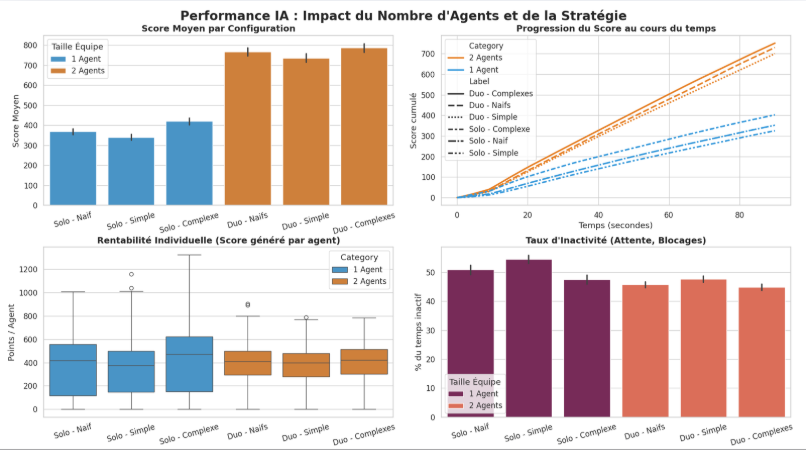

1. Architecture du Moteur et Modélisation (MVC)
Le moteur du jeu a été développé nativement en Python à l'aide de la bibliothèque Tkinter. L'architecture sépare strictement les données de la logique d'affichage :
- Gestion des états (State Machine) : Implémentation d'un cycle de vie rigoureux pour les aliments (
SORTI_DU_BAC,COUPE,CUIT) et la validation dynamique des recettes. - Moteur asynchrone : Une boucle de jeu personnalisée (Tick) gère simultanément les interpolations de mouvements fluides (dt), les temps de cuisson, et les actions bloquantes des agents sans paralyser l'interface graphique.

Rendu graphique de la grille, des stations interactives (Fours, Découpe, Service) et des indicateurs de progression.
2. Génération Procédurale de Cartes (PCG)
Pour soumettre les IA à des environnements imprévisibles, nous avons conçu un algorithme de génération de niveaux garantissant systématiquement une carte valide et "navigable". L'algorithme valide la topologie via plusieurs vérifications mathématiques avant d'approuver une grille :
- Algorithme de Flood Fill : Vérification de la connexité (
zone_connexe) pour s'assurer qu'aucune zone contenant une station n'est inaccessible. - Prévention des "Goulots d'étranglement" : Détection et interdiction des couloirs de largeur 1 (
check_min_width) pour éviter les blocages insolubles entre deux agents. - Analyse Géométrique : Détection des formes en "U" (
has_u_shape) pour empêcher la création de pièges ("dead-ends") qui pénaliseraient injustement le pathfinding.
3. Prise de Décision et Coopération Multi-Agents
Le comportement des agents (agent.py) est régi par un arbre de décision complexe évaluant l'état de l'environnement à chaque tick. La véritable difficulté réside dans la coopération entre deux instances autonomes partageant le même espace :
Pathfinding et Évitement Dynamique
La navigation utilise l'algorithme BFS (Breadth-First Search). Plutôt que de considérer les joueurs comme des entités transparentes, le partenaire est traité comme un obstacle dynamique. L'algorithme anticipe la trajectoire du partenaire (les deux prochaines cases de son chemin) pour recalculer sa propre route en temps réel.
Résolution des Deadlocks (Blocages)
Malgré l'évitement, des situations de face-à-face surviennent. L'équipe a implémenté une mécanique de résolution de stagnation (_check_blockage) : si un agent détecte qu'il n'a pas bougé depuis 2 secondes, il force une manœuvre de dégagement (retraite vers une case libre) pour céder le passage. Si le blocage persiste au-delà de 5 secondes, un "Hard Reset" annule sa tâche en cours.
Répartition Intelligente des Tâches
Pour optimiser le rendement, l'agent scrute les actions de son partenaire. Il trie les recettes disponibles selon sa "stratégie" (orientée rapidité ou complexité) et sélectionne la plus optimale tout en excluant la recette que le partenaire est déjà en train de préparer. De même, si deux agents visent la même station, l'IA calcule la distance de chacun et cède la priorité au plus proche.
4. Benchmarking et Analyse Statistique
Afin de prouver empiriquement l'efficacité de l'algorithme de coopération, un outil de simulation accélérée a été développé, permettant de lancer des centaines de parties automatisées, générant des jeux de données complets (scores, temps d'inactivité, coûts de déplacement). Les données ont ensuite été visualisées sous forme de tableaux de bord.

Tableau de bord statistique : Comparaison des performances (Score moyen, Taux d'inactivité, Rentabilité individuelle) entre le jeu en Solo (1 Agent) et en Duo Coopératif (2 Agents) selon différents profils heuristiques.
Conclusions de l'analyse : Les graphiques démontrent que la complexité des heuristiques (stratégies "simples" vs "complexes") a un impact direct sur le score total. De plus, bien que le mode Duo introduise un taux d'inactivité inévitable dû à l'évitement mutuel dans des espaces confinés (baisse de rentabilité individuelle), le score global de l'équipe double largement la performance d'un agent solo, validant l'efficacité des algorithmes de résolution de blocage.